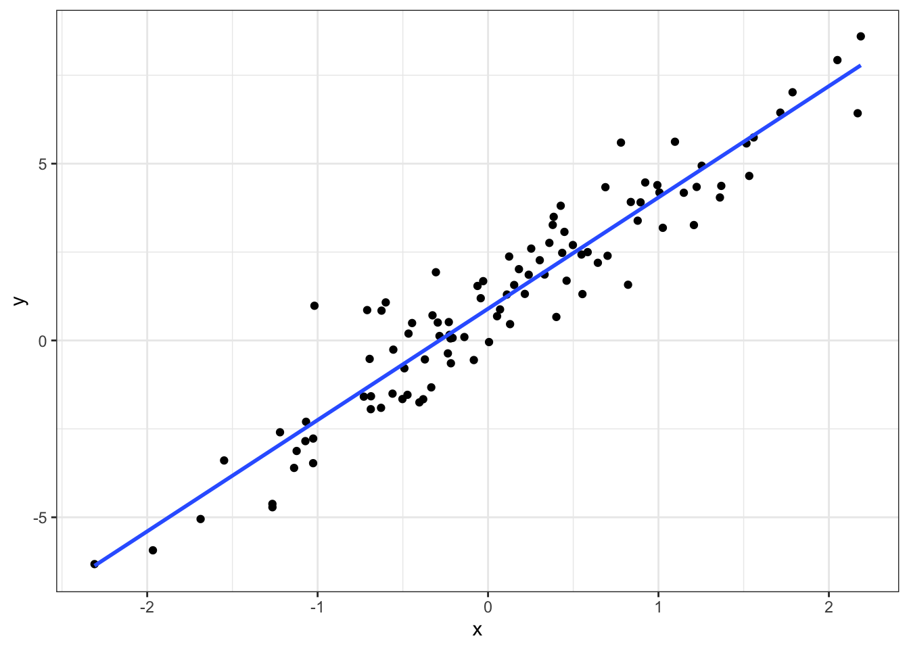
8 L8 // Общие линейные модели. Простая и множественная линейная регрессия
8.1 Простая линейная регрессия
8.1.1 Ограничения корреляционного анализа
- Корреляционный анализ позволяет изучить линейную взаимосвязь между переменными, оценить её силу и направление, протестировать гипотезу о статистической значимости взаимосвязи.
- Корреляционный анализ не позволяет предсказывать значения одной переменной на основе значений другой. Изучения связей между несколькими переменными в корреляционном анализе также не очень удобно.
Необходимо построение некоторой модели.
8.1.2 Идея регрессионной модели
Когда мы строили диаграммы рассеяния, мы добавляли на них линию тренда, которая отражала линейную составляющую связи между визуализируемыми переменными.
Визуально мы такую прямую проведём очень легко, а вот как мы нам получить её математическое выражение?
Первое, что нам нужно вспомнить — это общее уравнение прямой. Оно выглядит так:
\[ y = kx + b, \]
где \(k\) — угловой коэффициент (slope), задающий угол наклона прямой к оси \(x\), а \(b\) — свободный член (intercept), который обозначает ординату точки пересечения прямой с осью \(y\).
Таким образом, чтобы получить уравнение прямой, нам надо знать два этих числа.
8.1.3 Формализация модели
Мы привыкли к тому, что неизвестными являются \(x\) и \(y\), но теперь, когда мы ищем уравнение прямой на основе имеющихся наблюдений, ситуация изменяется. Запишем уравнение прямой, используя общепринятые обозначения:
\[ y = b_0 + b_1 x \]
Уравнение отражает зависимость между переменными \(x\) и \(y\), значения которых нам известны, так как у нас есть результаты измерений, а вот неизвестными теперь являются \(b_0\) и \(b_1\).
В терминах статистической модели:
- переменная \(y\) называется зависимая, предсказываемая, целевая переменная или регрессант
- переменная \(x\) носит названия независимая переменная, предиктор или регрессор
- числа \(b_0\) и \(b_1\) называются коэффициентами или параметрами модели
Зависимые и независимые переменные
Несмотря на использование терминов зависимая и независимая переменные, необходимо чётко понимать, что сам регрессионный анализ, как и корреляционный, ничего нам не говорит о причинности. Мы выражаем \(y\) через \(x\), но точно так же можем выразить и \(x\) через \(y\) — и модель будет подобрана, так как нет никаких математических ограничений. Поэтому если мы хотим сделать по результатам регрессионного анализа вывод о причинно-следственной связи между явлениями, нам необходимо либо серьёзное теоретическое обоснование нашего вывода — почему мы выбрали в качестве зависимой и независимой переменных именно эти? — либо использование экспериментельного дизайна исследования, где мы обосновываем причинно-следственный характер связи именно через дизайн эксперимента.
Однако здесь необходимо еще несколько уточнений. Закономерность, которую мы будем моделировать, корректнее записать в следующем виде:
\[ y = \beta_0 + \beta_1x, \]
где \(\beta_0\) и \(\beta_1\) — параметры генеральной совокупности.
Кроме того, для каждого отдельного объекта генеральной совокупности значение целевой переменной \(y_i\) будет также зависеть и он случайных факторов, которые не учитываются параметрами \(\beta_0\) и \(\beta_1\), то есть для конкретного объекта генеральной совокупности модель примет вид:
\[ y_i = \beta_0 + \beta_1 x + \varepsilon_i, \]
где \(\varepsilon_i\) — случайная изменчивость целевой переменной.
На эту модель мы и будем опираться при оценке параметров \(\beta_0\) и \(beta_1\).
8.1.4 Идентификация модели
Модель \(y_i = \beta_0 + \beta_1 x + \varepsilon_i\) имеет место в генеральной совокупности, однако, как мы обсуждали много раз ранее, мы всегда работаем с выборкой, поэтому для выборки мы запишем модель в следующем виде:
\[ y_i = b_0 + b_1 x_i + e_i, \]
где \(b_0 = \hat \beta_0\) и \(b_1 = \hat \beta_1\) — оценка параметров генеральной совокупности, \(e_i\) — ошибки (или остатки, residuals) модели.
Идентификация регрессионной модели сводится к нахождению коэффициентов \(b_0\) и \(b_1\). Мы хотим провести такую прямую, которая наилучшим образом будет описывать имеющуюся в данных закономерность, поэтому необходимо найти метрику, по которому мы будем определять «хорошесть» нашей прямой.
Графически мы делаем вот что: проводим прямую через облако точек. Очевидно, что красная прямая описывает закономерность совсем плохо, зелёная — чуть получше, а синяя — то, что нам нужно.
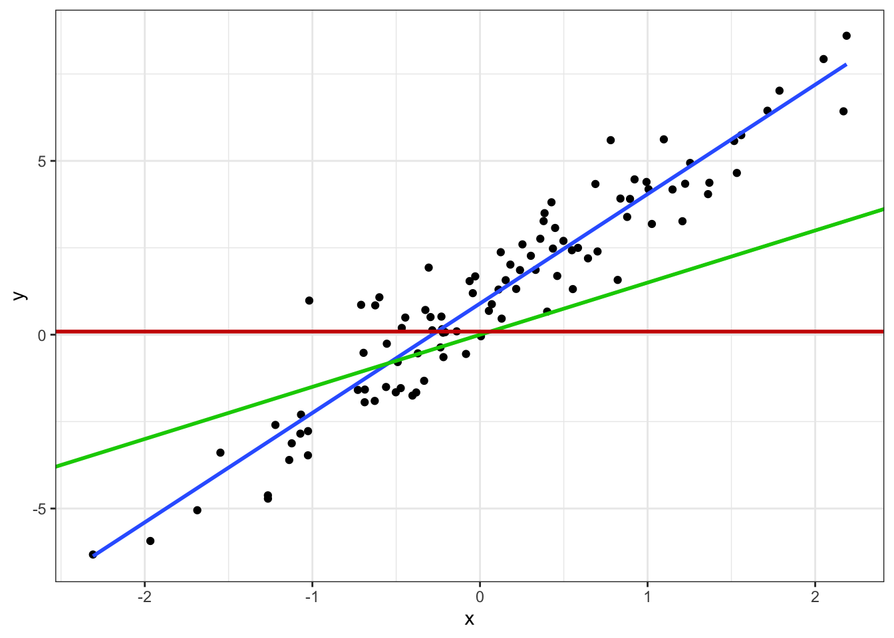
Из картинки также видно, что даже синяя прамая не описывает наши данные максимально точно — не все точки попали на прямую. Ясно, что идеальную прямую мы провести и не сможем — точек же целое облако. Поэтому любая построенная нами модель будет содержать ошибку — те самые \(e_i\) — вновь по причине вариативности и неопределенности данных.
Уравнение подбираемой нами прямой — синяя на рисунке выше — запишем в следующем виде:
\[ \hat y_i = b_0 + b_1 x_i, \]
где \(\hat y_i\) — модельное значение целевой переменной, то есть то, что лежит на построенной нами прямой для конкретного значения регрессора \(x_i\).
Тогда мы сможем отобразить ошибки модели на графике:
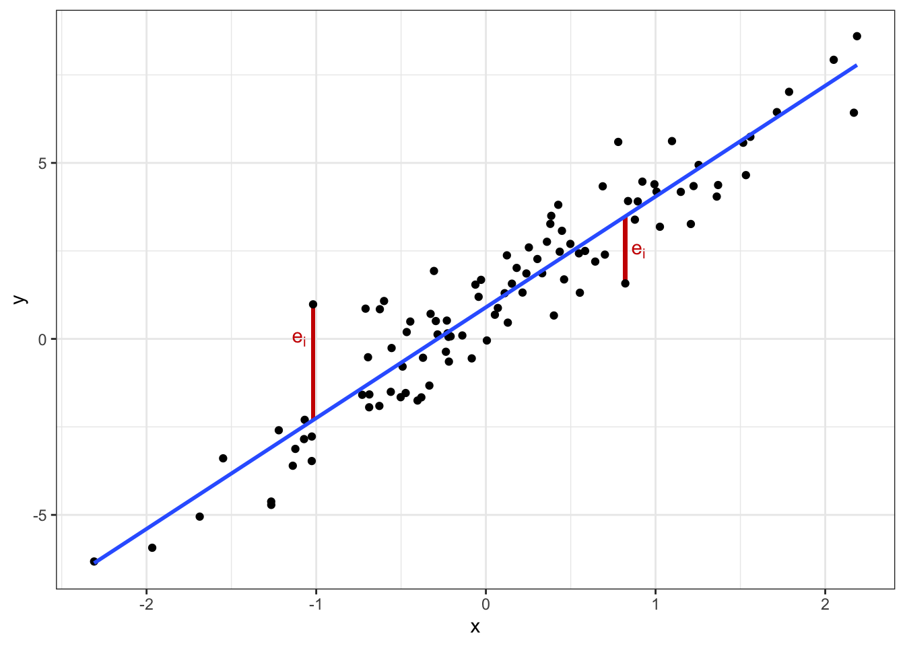
Мы заинтересованы в том, чтобы наша модель ошибалась как можно меньше, то есть сумма ошибок \(e_i\) была минимальна. Получается, нам надо подобрать такие параметры \(b_0\) и \(b_1\), при которых сумма ошибок модели будет наименьшей. Математически это можно записать так:
\[ Q_{\text{res}} = \sum_{i=1}^n e_i^2 \to \min_{b_0, b_1} \]
Обратите внимание, что минимизируется сумма квадратов ошибок, так как отдельные ошибки могут быть как положительными, так и отрицательными — что и отображено на графике выше —- в силу чего сумма ошибок будет равна нулю. Ситуация аналогичная расчету дисперсии, где мы возводили отклонения в квадрат.
Если мы распишем, как определяется ошибка модели, то получится следующее:
\[ Q_{\text{res}} = \sum_{i=1}^n e_i^2 = \sum_{i=1}^n (y_i - \hat y_i)^2 = \sum_{i=1}^n \big( y_i - (b_0 + b_1 x_i) \big)^2 \]
Выходит, что \(Q_{\text{res}}\) является функцией, зависящей от \(b_0\) и \(b_1\), что можно обозначить как \(f(b_0, b_1)\):
\[ Q_{\text{res}} = f(b_0, b_1) = \sum (y_i - \hat y_i)^2 = \sum (y_i - b_0 - b_1x_i)^2 \to \min_{b_0, b_1} \]
В итоге задача идентификации модели линейной регрессии сводится к нахождению минимума функции \(Q_{\text{res}} = f(b_0, b_1)\). Этим занимается метод наименьшиъ квадратов.
8.1.4.1 Метод наименьших квадратов
Метод наименьших квадратов работает следующим образом. Как уже отмечено выше, условие минимизации ошибки модели представляет собой функцию двух аргументов:
\[ f(b_0, b_1) = \sum (y_i - b_0 - b_1x_i)^2 \]
Это квадратичная функция, и чтобы нам дальше удобнее было с ней работать, раскроем скобки:
\[ f(b_0, b_1) = \sum (y_i - b_0 - b_1x_i) (y_i - b_0 - b_1x_i) \]
\[ f(b_0, b_1) = \sum (y_i^2 - b_0 y_i - b_1 x_i y_i - b_0 y_i - b_1 x_i y_i + b_0 b_1 x_i + b_1^2 x_i^2 + b_0^2 + b_0 b_1 x_i) \]
\[ f(b_0, b_1) = \sum(y_i^2 - 2 b_1 x_i y_i - 2 y_i b_0 + x_i^2 b_1^2 + b_0^2 + 2 x_i b_1 b_0) \]
Чтобы определить, при каких значения \(b_0\) и \(b_1\) функция будет принимать минимальное значение, нужно взять две частные производные этой функции по \(b_0\) и \(b_1\) и приравнять их к нулю.
Берём частные производные:
\[ \frac{f(b_0, b_1)}{\partial b_0} = \sum (-2y_i + 2b_0 + 2x_ib_1) = -2 \sum \big( y_i - (b_0 + b_1 x_i) \big) \]
\[ \frac{f(b_0, b_1)}{\partial b_1} = \sum (-2 x_i y_i + 2 x_i^2 b_1 + 2 x_i b_0) = -2 \sum \big( y_i - (b_0 + b_1 x_i) \big) x_i \]
Приравниваем производные к нулю и решаем систему уравнений:
\[ \cases { -2 \sum \big( y_i - (b_0 + b_1 x_i) \big) = 0 \\ -2 \sum \big( y_i - (b_0 + b_1 x_i) \big) x_i = 0 } \]
\[ \cases{ \sum \big( y_i - (b_0 + b_1 x_i) \big) = 0 \\ \sum \big( y_i - (b_0 + b_1 x_i) \big) x_i = 0 } \]
\[ \cases{ \sum y_i - \sum b_0 + \sum b_1 x_i = 0 \\ \sum y_i x_i - \sum b_0 x_i + \sum b_1 x^2_i = 0 } \]
\[ \cases{ \sum b_0 + \sum b_1 x_i = \sum y_i \\ \sum b_0 x_i + \sum b_1 x_i^2 = \sum y_i x_i } \]
\[ \cases{ b1 \sum x_i + n b_0 = \sum y_i \\ b1 \sum x^2_i + b_0 \sum x_i = \sum y_i x_i } \]
\[ b_0 = \frac{\sum y_i}{n} - b_1 \frac{\sum x_i}{n} = \bar y - b_1 \bar x \]
\[ b1 \sum x_i^2 + (\bar y - b_1 \bar x) \sum x_i = \sum x_i y_i \]
\[ \underline{b_1 \sum x_i^2} + \bar y \sum x_i - \underline{b_1 \bar x \sum x_i} = \sum x_i y_i \]
\[ b_1 \Big( \sum x_i^2 - \bar x \sum x_i \Big) = \sum x_i y_i - \bar y \sum x_i \]
\[ b_1 = \frac{\sum x_i y_i - \bar y \sum x_i}{\sum x_i^2 - \bar x \sum x_i} = \frac{(\sum x_i y_i - \bar y \sum x_i) \times n}{(\sum x_i^2 - \bar x \sum x_i) \times n} \]
\[ b_1 = \frac{\overline{xy} - \bar x \cdot \bar y}{\overline{x^2} - \bar x^2} = \frac{\overline{xy} - \bar x \bar y}{s_X^2} \]
В сухом остатке из метода наименьших квадратов нам надо вынести две идеи:
- задача идентификации модели линейной регрессии имеет аналитическое решение — то есть мы можем подобрать коэффициенты модели, опираясь только на имеющиеся данные
- это аналитическое решение имеет следующий вид:
\[ \cases{ b_0 = \bar y - b_1 \bar x \\ b_1 = \frac{\overline{xy} - \bar x \cdot \bar y}{\overline{x^2} - \bar x^2} = \frac{\overline{xy} - \bar x \bar y}{s_X^2} } \]
8.1.4.2 Матричное вычисление коэффициентов
Частные производные это, конечно, хорошо, однако можно вычислить коэффициенты и проще через матрицы. Имеющуюся у нас модель мы модем записать следующим образом: пусть у нас есть \(n\) наблюдений, каждое из которых описывается моделью \(y_i = b_0 + b_1 x_i + e_i\). Тогда мы можем записать следующую систему:
\[ \cases{ b_0 + b_1 x_1 + e_1 = y_1 \\ b_0 + b_1 x_2 + e_2 = y_2 \\ \dots \\ b_0 + b_1 x_n + e_n = y_n \\ } \]
Эту систему мы можем переписать в матричном виде:
\[ \mathbf{X} \mathbf{b} + \mathbf{e} = \mathbf{y}, \]
где \(\mathbf{y}\) — вектор нашей целевой переменной, \(\mathbf{X}\) — матрица предикторов, \(\mathbf{b}\) — вектор коэффициентов модели, \(\mathbf{e}\) — вектор ошибок (остатков) модели.
Может возникнуть резонный вопрос: «почему \(\mathbf{X}\) матрица, ведь у нас только одна независимая переменная?». Так как вектор коэффициентов модели \(\mathbf{b}\) содержит два элемента \(b_0\) и \(b_1\), то для удобства вычислений к вектору значений предиктора добавляют вектор, состоящий из единиц, который будет отвечать за интерсепт нашей модели — в результате получается матрица \(\mathbf{X}\), которая имеет следующий вид:
\[ \mathbf{X} = \pmatrix{1 & x_1 \\ 1 & x_2 \\ \vdots & \vdots \\ 1 & x_n} \]
Опуская детали, сразу укажем матричное решение для коэффициентов модели:
\[ \mathbf{b} = (\mathbf{X}^\mathrm{T}\mathbf{X})^{-1} \mathbf{X}^\mathrm{T}\mathbf{y} \]
Отметим важную деталь из полученного решения: в ходе вычисления коэффициентов мы берём обратную матрицу от матрицы \(\mathbf{X}^\mathrm{T}\mathbf{X}\). Этот факт нам пригодится в следующем разделе.
8.1.5 Тестирование качества модели
Окей, коэффициенты модели мы посчитали, а значит и модель теперь подобрана. Хотелось бы понять, насколько она получилась хорошей с точки зрения описания закономерностей данных.
8.1.5.1 Коэффициент детерминации
Первое, что хочется понять — насколько наша модель информативна. Поскольку у нас есть вариативность как одна из основных характеристик данных, подойдем к вопросу через неё. Иначе говоря, нам интересно, сколько дисперсии наших данных модель смогла объяснить. На практике работают не с дисперсией, а с суммой квадратов, что почти то же самое.
Вся изменчивость наших данных называется общая сумма квадратов (total sum of squares, TSS) и определяется так:
\[ \text{TSS} = \sum_{i=1}^n (\bar y - y_i)^2 \]
Если мы попробуем изобразить это графически, то получим вот что:
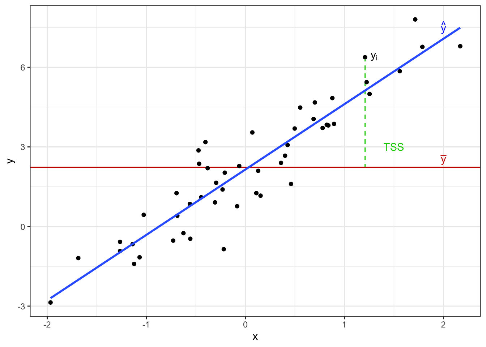
Одну часть этой изменчивости объясняет модель — это объясненная сумма квадратов (explained sum of squares, ESS):
\[ \text{ESS} = \sum_{i=1}^n (\bar y - \hat y)^2 \]
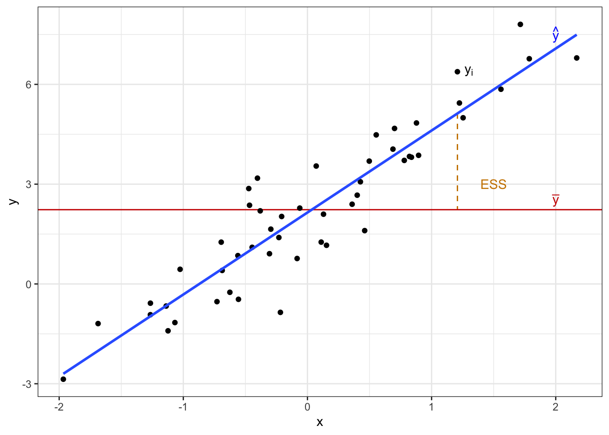
Другую часть этой изменчивости модель не улавливает, и она остаётся необъяснённой (остаточной) (residual sum of squares, RSS):
\[ \text{RSS} = \sum_{i=1}^n (y_i - \hat y_i)^2 \]
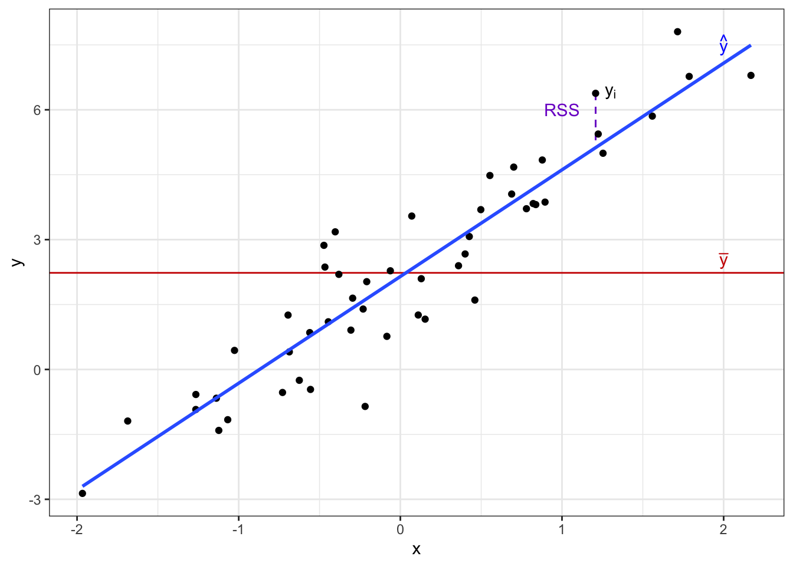
Если объединить все три извенчивости на одной картинке, то получится следующее:
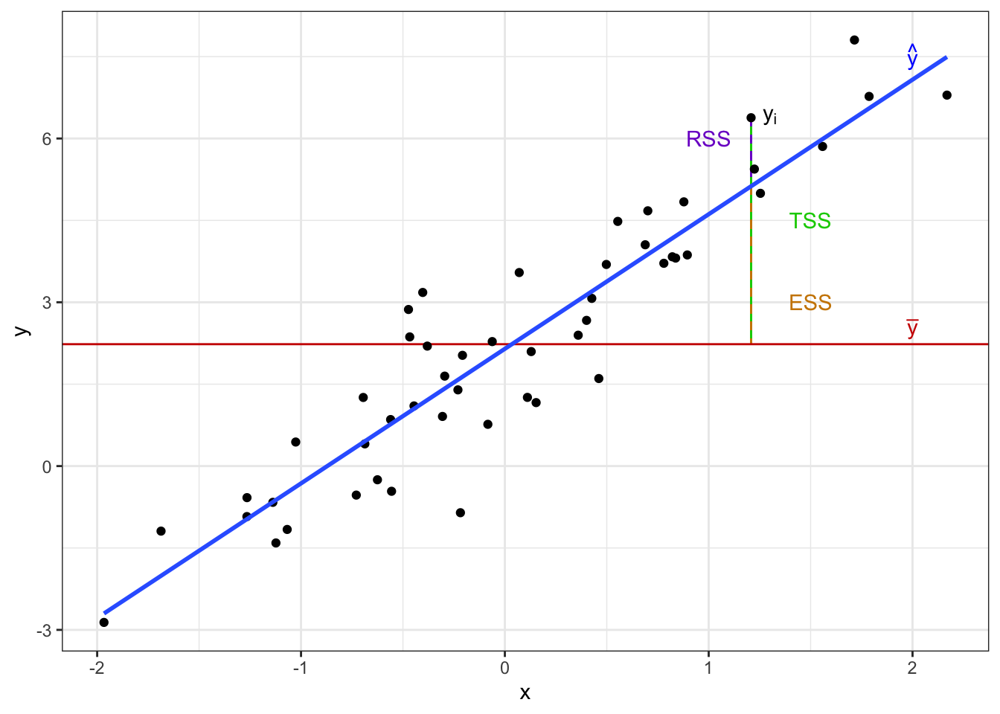
Явно видно, что
\[ \text{TSS} = \text{ESS} + \text{RSS} \]
Вообще это бы хорошо доказать
Так как в расчете сумм квадратов у нас используются, собственно, квадраты, напрямую из визуализации это равенство не следует, однако тем не менее, выполняется.
\[ \begin{split} \text{TSS} & = \sum (y_i - \bar y)^2 = \\ & =\sum (y_i - \hat y + \hat y - \bar y)^2 = \\ & =\sum \big( (y_i - \hat y_i) + (\hat y_i - \bar y) \big)^2 = \\ & = \sum (y_i - \hat y_i) = \sum (\hat y_i - \bar y) + 2 \sum (y_i - \hat y_i)(\hat y_i - \bar y) = \\ & = \text{RSS} + \text{ESS} + 2 \sum (y_i - \hat y_i)(\hat y_i - \bar y) \end{split} \]
Окей, осталось доказать, что \(2 \sum (y_i - \hat y_i)(\hat y_i - \bar y) = 0\), и все будет найс.
Так как \(b_0 = \bar y - b_1 x\),
\[ \begin{split} \sum (y_i - \hat y_i)(\hat y_i - \bar y) & = \sum (y_i - b_0 - b_1 x_i) (b_0 + b_1 x_i - \bar y) = \\ & = \sum (y_i - \bar y + b_1 \bar x - b_1x_i) (\bar y - b_1 \bar x + b_1 x_i - \bar y) = \\ & = \sum \big( (y_i - \bar y) - b_1(x_i - \bar x) \big) \times b_1 (x_i - \bar x) = \\ & = \sum \big( b_1 (x_i - \bar x) (y_i - \bar y) - b_1^2 (x_i - \bar x)^2 \big) = \\ & = b_1 \sum (x_i - \bar x) (y_i - \bar y) - b_1^2 \sum (x_i - \bar x) \end{split} \]
Так как \(b_1 = \frac{\sum(x_i - \bar x)(y_i - \bar y)}{\sum (x_i - \bar x)^2}\), получается, что:
\[ \begin{split} \frac{\Big( \sum (x_i - \bar x) (y_i - \bar y) \Big)^2}{\sum (x_i - \bar x)^2} - \frac{\Big( \sum (x_i - \bar x) (y_i - \bar y) \Big)^2 \times \sum (x_i - \bar x)^2}{\Big( \sum (x_i - \bar x)^2\Big)^2} = \\ = \frac{\Big( \sum (x_i - \bar x) (y_i - \bar y) \Big)^2}{\sum (x_i - \bar x)^2} - \frac{\Big( \sum (x_i - \bar x) (y_i - \bar y) \Big)^2}{\sum (x_i - \bar x)^2} = 0 \end{split} \]
В качестве метрики информативности модели используется доля объясненной дисперсии — эта метрика называется коэффициент детерминации \(R^2\) и вычисляется по формуле:
\[ R^2 = \frac{\text{ESS}}{\text{TSS}} = 1 - \frac{\text{RSS}}{\text{TSS}} \]
Из формулы следует, что \(0 \leq R^2 \leq 1\). Считается, что если модель объясняется 0.8 и более дисперсии данных, то она хороша, хотя этот порог очень сильно зависит от конкретной задачи и исследовательской области.
Кроме того, отметим, что коэффициент детерминации равен квадрату коэффициента корреляции между целевой переменной и предиктором:
\[ R^2 = r^2 \]
8.1.5.2 F-статистика
На основе всё тех же сумм квадратов мы можем сделать вывод о том, насколько наша модель статистически значима. Здесь мы говорим о значимости модели в целом — не о значимости отдельных предикторов, это будет позже. Для этого нам надо заняться тестированием статистической гипотезы. Она формулируется так:
\[ \begin{split} H_0&: \beta_0 = \beta_1 = 0 \\ H_1&: \beta_0 \neq 0 \vee \beta_1 \neq 0 \end{split} \]
Для тестирования данной гипотезы используется следующая статистика:
\[ F_{\text{df}_e, \text{df}_r} = \frac{\text{MS}_e}{\text{MS}_r} = \frac{\text{ESS}/\text{df}_e}{\text{RSS}/\text{df}_r} \overset{H_0}{\thicksim} F(\text{df}_e, \text{df}_r) \]
Здесь \(\text{MS}_e\) — это «средний объясненный квадрат», \(\text{MS}_r\) — «средний остаточный квадрат», а \(\text{df}_e = p - 1\) и \(\text{df}_e = n - p - 1\) — степени свободы для объясненной и остаточной изменчивости, \(p\) — количество предикторов в модели, \(n\) — число наблюдений. По сути, эта статистика показывает, во сколько раз объясненная дисперсия больше остаточной.
Эта статистика подчиняется F-распределению (распределению Фишера), которое выглядит так (изображен случай \(\text{df}_e = 3\), \(\text{df}_e = 50\)):

Как и всегда, для наблюдаемой \(F\)-статистики рассчитывается p-value, на основе значения которого мы делаем вывод о статистической значимости модели в целом.
8.1.5.3 Метрики качества модели
Кроме статистического критерия, мы можем использовать и другие показатели качества модели, называемыми метриками качества. В принципе, и коэффициент детерминации является метрикой качества, однако нам часто интересно, насколько ошибается наша модель в своих предсказаниях, поэтому появляются разные способы рассчитать эту ошибку.
8.1.5.3.1 MSE
Первый вариант — вычислить средний квадрат ошибки модели (mean squared error):
\[ \text{MSE} = \frac{1}{n} \sum_{i=1}^n \Big ( y_i - \hat y_i \Big)^2 \]
8.1.5.3.2 RMSE
Для сравнения двух моделей это полезная метрика, однако для интерпретации она не очень удобна, так как выражена в квадрате единиц целевой переменной. Однако если извлечь квадратный корень из неё, то она превращается в среднеквадратичную ошибку (root mean squared error) и становится гораздо более интерпретабельной:
\[ \text{RMSE} = \sqrt{\text{MSE}} = \sqrt{\frac{1}{n} \sum_{i=1}^n \Big ( y_i - \hat y_i \Big)^2} \]
8.1.5.3.3 MAE
Существует и другой способ измерения ошибки модели — если заменить квадрат на модуль, то получим среднюю абсолютную ошибку (mean absolute error):
\[ \text{MAE} = \frac{1}{n} \sum_{i=1}^n |y_i - \hat y_i| \]
8.1.5.3.4 MAPE
Более того, мы можем оценить точность предсказаний и в относительных значениях — перед суммированием разделим абсолютные отклонения на модуль значения целевой переменной:
\[ \text{MAPE} = \frac{1}{n} \sum_{i=1}^n \Bigg |\frac{y_i - \hat y_i}{y_i} \Bigg| \]
8.1.6 Тестирование значимости предикторов
Если модель значима в целом, значит среди её коэффициентов есть те, которые статистически отличны от нуля. Иначе говоря, есть такие предикторы, которые значимо влияют на нашу целевую переменную. В случае простой линейной регрессии предиктора всего два — intercept и slope. Intercept не всегда интерпретабелен, поэтому основное внимание уделают угловому коэффициенту. Формулы для интерсепта будут аналогичны.
Статистические гипотезы для тестирования значимости углового коэффициента будут стандартны:
\[ \begin{split} H_0&: \beta_1 = 0 \\ H_1&: \beta_1 \neq 0 \end{split} \]
Тестирование гипотез осуществляется с помощью одновыборочного t-теста:
\[ t = \frac{b_1 - \beta_1}{\text{se}_{b_1}} = \frac{b_1}{\text{se}_{b_1}} \overset{H_0}{\thicksim} t(\text{df}_t), \]
где \(\text{df}_t = n-p-1\), \(\text{se}_{b_1} = \frac{s_r}{\sum_{i=1}^n (x_i - \bar x)^2}\), \(s_r = \sqrt{\frac{\sum_{i=1}^n (y_i - \hat y_i)^2}{n-2}}\).
Статистический вывод осуществляется по стандартному алгоритму.
8.1.7 Диагностика модели
Модель линейной регрессии обладает рядом допущений, которые необходимо проверить. При построении модели мы, на самом деле, исходили из нескольких предположений:
- Во-первых, мы считали, что связь между предикторами и зависимой переменной линейная.
- Во-вторых, мы предположили, что наша модель полностью улавливает тренд закономерности, а значит остатки (ошибки) модели случайны.
- их среднее при любых значениях предиктора равно нулю: \(\bar \varepsilon_i = 0\),
- и они не зависят друг от друга: \(\text{cor}\underset{i \neq j}{(\varepsilon_i, \varepsilon_j)} = 0\)
- Кроме того, раз остатки заключают в себе случайный компонент модели, то они должны быть распределены нормально: \(\varepsilon \thicksim \mathcal N(0, \sigma^2_\varepsilon)\)
- причём их дисперсия должна быть одинакова при любых значениях предиктора: \(\sigma^2_{\varepsilon_i} = \sigma^2_\varepsilon = \text{const}\)
8.1.7.1 Линейность связи
К сожалению, специального способа проверить это допущение не существует. В случае простой линейной регрессии нас спасает то, что у нас только один предиктор, а значит мы можем изобразить диаграмму рассеяния и визуально проверить, выполняется ли допущение линейности связи.
8.1.7.2 Независимость остатков друг от друга
И вновь мы в ситуации, когда у нас нет возможности с помощью статистики проверить данное допущение. Независимость остатков следует из независимости наблюдений, что можно проконтролировать только с помощью дизайна исследования, в том числе дизайна сэмплинга (сбора) выборки.
8.1.7.3 Нормальное распределение остатков
А вот это уже проверяемое эмпирически предположение. Здесь существует несколько подходов: можно воспользоваться статистическим тестом (например, тестом Шапиро-Уилка), однако можно обойтись и графической диагностикой. Во-первых, можно построить гистограмму, а во-вторых, есть особы график QQ-plot, который также позволяет проверить допущение о нормальном распределении.
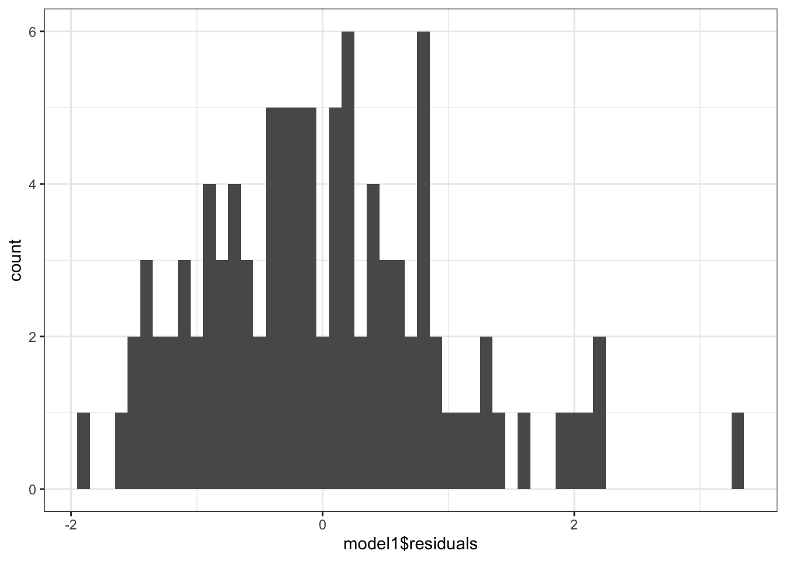
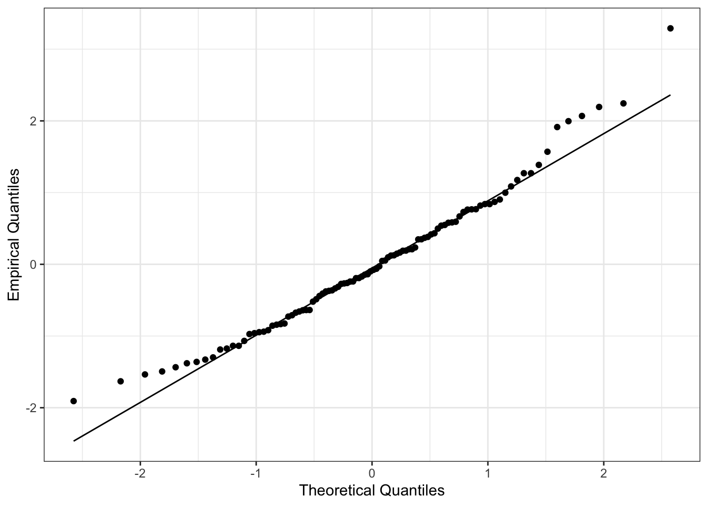
8.1.7.4 Независимость остатков от предсказанных значений
В случае, если наша модель хорошо схватывает закономерность, представленную в данных, остатки не должны зависеть от предсказанных значений. Это значит два свойства:
- их среднее при любых значениях предиктора равно нулю: \(\bar \varepsilon_i = 0\)
- их дисперсия должна быть одинакова при любых значениях предиктора: \(\sigma^2_{\varepsilon_i} = \sigma^2_\varepsilon = \text{const}\)
Допущение о равенстве дисперсии остатков при любых значениях предиктора называется по-умному гомоскедастичностью. Её противоположность — это гетероскедастичность. Для проверки этого допущения также существуют статистические тесты, однако оба допущения можно проверить графически на одном и том же графике. Для этого нам необходимо построить диаграмму рассеяния, где по оси x будут идти предсказанные моделью значения, и по оси y остатки модели.
Если мы наблюдаем такую картину, то мы можем заключить, что между остатками модели и предсказанными значениями связи нет:
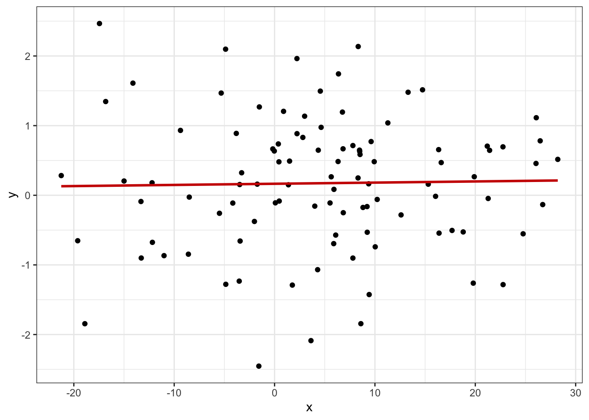
На этом графике мы видим, что связь есть — среднее остатков зависит от предсказанного значения. Однако дисперсия остатков при всех значениях целевой переменной, а значит и при всех значениях предиктора, одинакова — гетероскедастичность отсутствует.
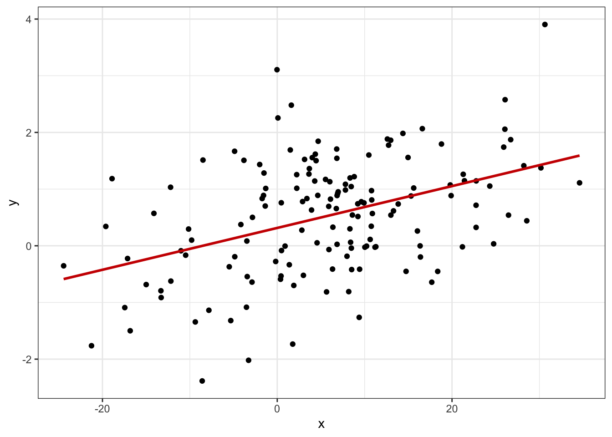
На этом графике мы видим, во-первых, что среднее распределения остатков зависит от предсказанных значений, а во-вторых, распределение остатков гетероскедастично — дисперсия увеличивается с ростом значений целевой переменной.
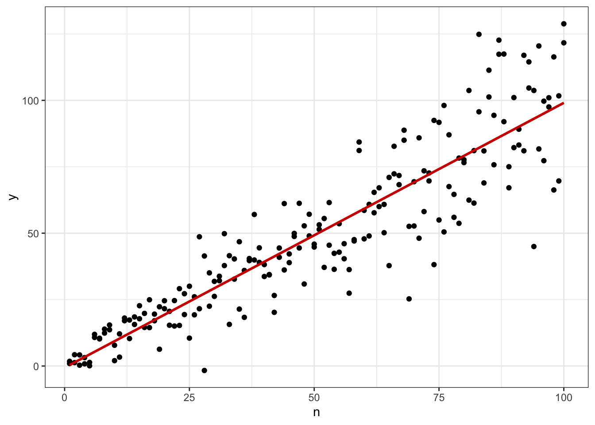
8.1.7.4.1 Влиятельные наблюдения
Последним аспектом диагностики модели является поиск влиятельных наблюдений (influential points). Это такие точки, которые существенно влияют на положении регрессионной прямой — она сильно меняет свой наклон, если их исключить из выборки. Посмотрим на рисунок:
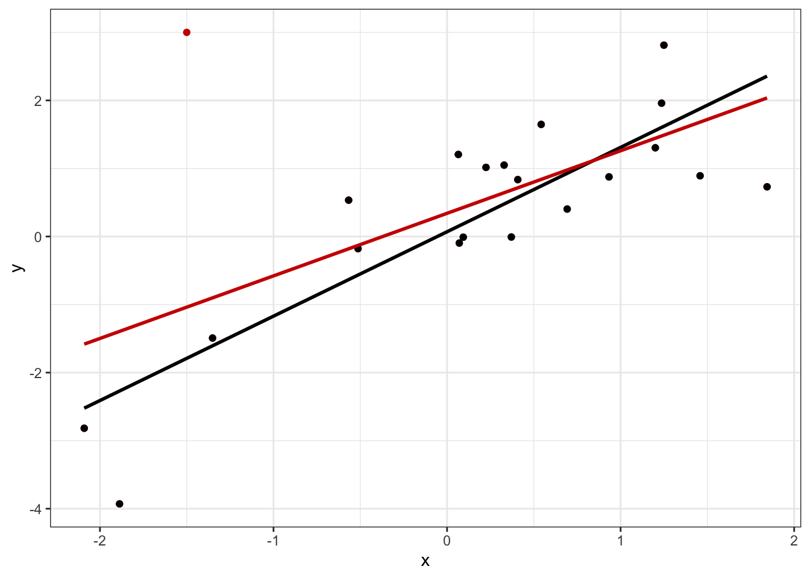
Здесь красная точка является влиятельным наблюдением, так как сильно меняет кгол наклона регрессионной прямой: черная линия построена только по черным точкам, красная — по всем, включая красную.
Влиятельные наблюдения могут быть статистическими выбросами, но не обязательно. Это могут быть наблюдения, не подчиняющиеся общей закономерности между переменными, то есть наблюдения какой-либо особенной группы, в которых связь между изучаемыми переменными отличается от связи во всей остальной выборке.
Для оценки влиятельных наблюдений вводятся метрики Leverage и Cook’s Distance (расстояние Кука). Мы не будем погружаться в то, как они вычисляются, а лишь скажем, что оценить влиятельность наблюдений можно с помощью графика Residual vs Leverage. Если расстояние Кука для данного наблюдения больше 0.5 (другой порог — больше 1), то это кандидат во влиятельные наблюдения. Необходимо изучить его и выяснить, чем оно может отличаться ото всех других.
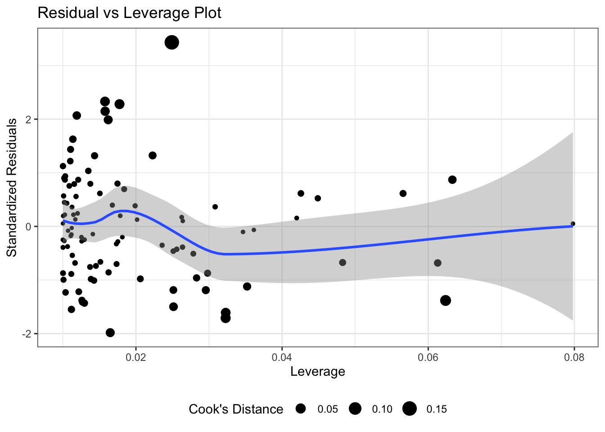
8.1.8 Предсказания на основе модели
Поскольку у нас теперь есть математическая модель, мы можем на её основе предсказывать значения целевой переменной для новых значений предиктора. Однако здесь стоит оговорить следующую деталь. Задача предсказания делится на два вида: интерполяция и экстраполяция.
- Интерполяция — предсказания значений целевой переменной внутри заданного диапазона значений предиктора.
- Экстраполяция — предсказания значений целевой переменной вне заданного диапазона значений предиктора.
С задачей интерполяции линейные модели справляются хорошо. С задачей экстраполяции — хуже, потому что неизвестно, как себя поведет целевая переменная при тех значениях предиктора, которые нам не попадались. На картинке представлен пример этой мысли. Черные точки — имеющиеся наблюдения. Серые — те, которые мы пытаемся предсказать.
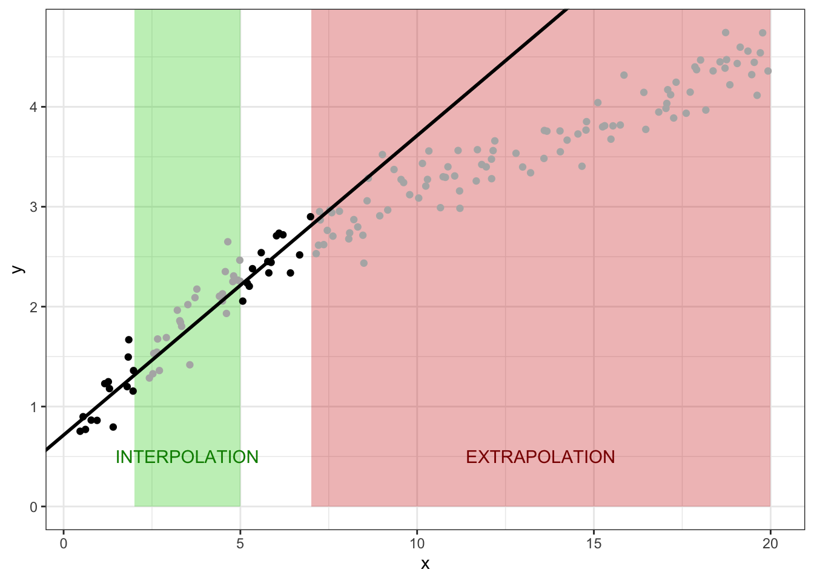
8.2 Множественная линейная регрессия
Простая линейная регрессия хороша, однако позволяет изучать взаимосвязи только между двумя переменными. Собственно, это позволяла делать и корреляция, разве что предсказывать мы не могли. Но пока что профита с введения новой модели немного. Нам же интересно изучать более сложные связи между несколькими переменными — и в этом нам поможет множественная линейная регрессия.
Надо сказать, что вся логика работы с простой линейной регрессией сохраняется и для множественной линейной регрессии — мы так же будем идентифицировать модель методом наименьших квадратов, мы так же будем рассчитывать коэффициент детерминации, тестирования статистическую значимость модели в целом и значимость отдельных предикторов, сравнивать модели друг с другом на основе метрик качества и проводить диагностику модели. Всё — практически — остается таким же. Поэтому далее мы сосредоточимся, прежде всего, на разнообразии моделей множественной линейной регрессии, потому что возможно там много чего.